KOContour
The app can be installed from:
Requires Windows 10 (build 1809) or later, or Windows 11.
Contour map display for elevation data files or DEM elevation servers such as Open Topo Data and OpenTopography — and not only for the Earth: it can also map the Moon, Mercury, Venus, Mars, Vesta, Ceres, Pluto and Charon.
Windows UWP Microsoft Store Free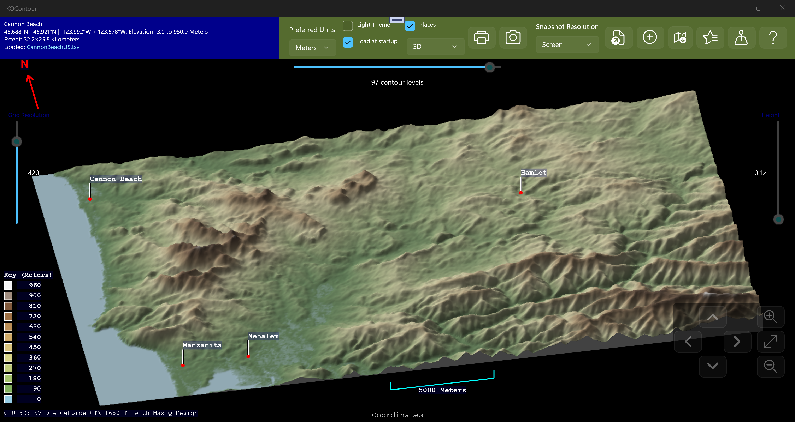
KOContour draws contour maps — and 3D relief views — showing the height of the ground. It can download the heights for any area you choose, anywhere on the Earth (see Use a DEM Server) or on the Moon, Mars and other worlds (see Maps of Other Worlds), or open a data file you already have (see Load Data). The sections below have screenshots showing how the main features work.
KOContour reads elevation data files from your computer and displays them as contour maps. A typical data file would look like this:
type latitude longitude altitude (ft) name desc T 53.231479474 -6.299506408 1672.9 Stillorgan Ireland T 53.231479474 -6.299119017 1678.8 T 53.231479474 -6.298731626 1687.9 T 53.231479474 -6.298344235 1698.1 T 53.231479474 -6.297956845 1704.0 T 53.231479474 -6.297569454 1708.2 T 53.231479474 -6.297182063 1709.2
The example above assumes tab-separated columns, which is recommended so that your description field can then use commas.
Data files that KOContour creates for you have one more column at the end, headed body, which names
the world the data is of — Earth, Moon, Mars, Pluto and so on — on the
first data line only, like the name and description. You do not need to add it to your own files: a file without
a body column is taken to be of the Earth. See Maps of Other Worlds.
The most up to date version of this information will always be the online version.
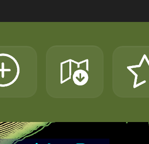
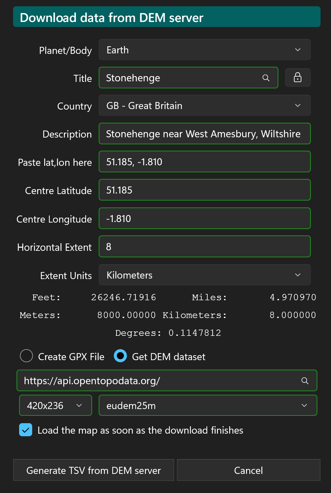
There are a number of Digital Elevation Model (DEM) servers on the internet, and KOContour can fetch your elevation grid directly from two of them — no external website needed. These are built in, choose one from the DEM server suggestions which will pop up if you type open into the DEM server URL field.
You should type the URL of your chosen server in the DEM server box. KOContour knows how to “talk” to these, and any others which use the same protocol, such as if you run your own in a Docker environment.
These two servers hold data for the Earth. To get elevation data for the Moon, Mars or another world, set the Planet/Body drop-down at the top of the same dialog instead: the right server is then chosen for you and no key is needed. See Maps of Other Worlds.
Open Topo Data — https://api.opentopodata.org/
OpenTopography — https://portal.opentopography.org/
The trailing /API is optional — KOContour accepts either form. Both are also already in the
server dropdown, so you can just select one.
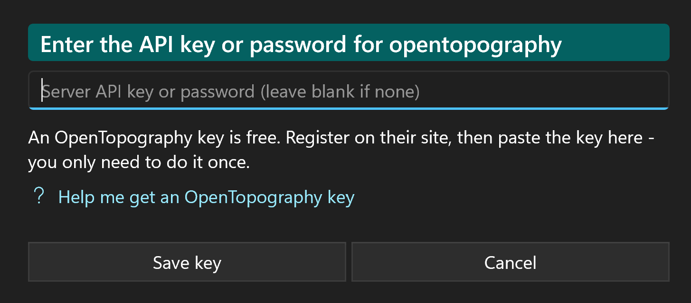
As well as the public Open Topo Data server (api.opentopodata.org), KOContour can use any
self-hosted Open Topo Data server (it is open-source, and meant to be run on your own computer or server) — or
indeed any other elevation server that works the same way.
The “Open Topo Data API” implements a custom REST API:
GET/POST /v1/{dataset}?locations=lat,lon|lat,lon → JSON
{results:[{elevation, location}]}. There is no formal standard name; it was deliberately modelled to
look similar to the Google Maps Elevation API.
It is one of a family of “elevation point-query” JSON APIs, but they are not drop-in compatible with one another.
The “OpenTopography API” implements custom REST endpoints
(globaldem?demtype=…, usgsdem?datasetName=…) that return a raster
file for a bounding box. You will need to request an API key to use this, but it is free.
The real standard for “give me a DEM raster for this bounding box” is OGC WCS (Web Coverage Service) — with its cousins WMS / WMTS for map images. Many DEM servers expose WCS (national mapping agencies, GeoServer / MapServer / THREDDS instances, and so on). OpenTopography's API plays the same role as WCS but is not WCS — it is its own thing.
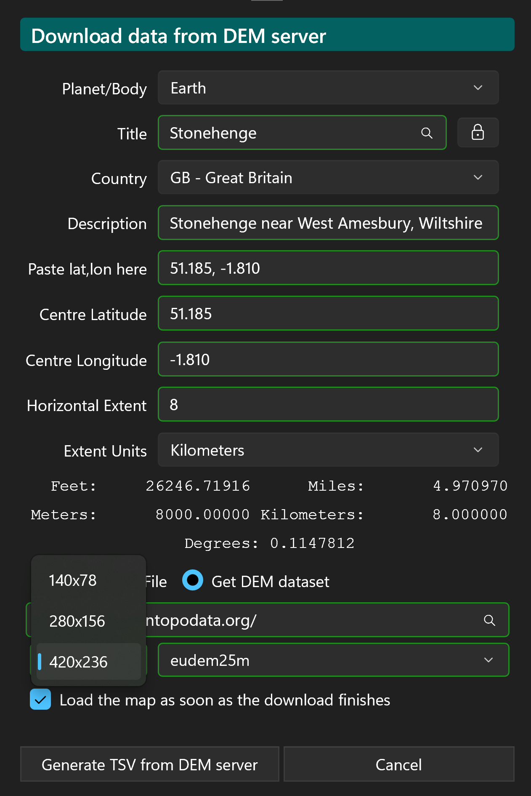
When you have chosen your server, make sure you enter the API key using the padlock button in the lower right of the dialog. The grid resolution dropdown below the dataset name will be populated with suitable values (you may have to “tab off” the server name field), so select the one you want. Similarly a dataset recommendation will be selected, but you can override that if you wish. Once you are done setting up your selection parameters click Generate TSV from DEM server; a file picker lets you choose where to save the data — I recommend making a ContourMaps folder under your Pictures folder and use file type .tsv which is just tab-separated values. KOContour is registered as a handler for .tsv files so you can just double-click on them to open a map if you use that. Click the Save button and the download will begin.
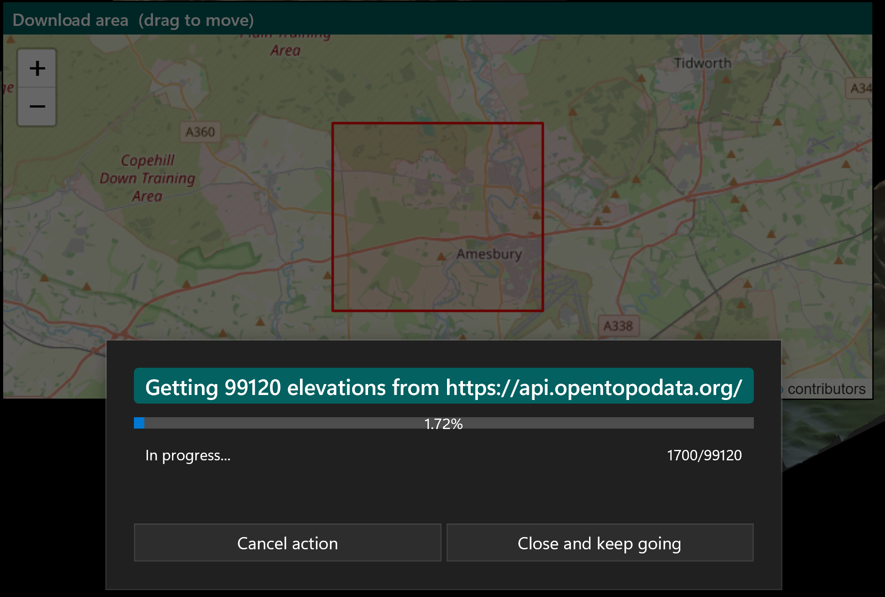
While the elevations download, a small map of the area pops up with the area being downloaded outlined in red — here the country around Stonehenge and Amesbury, on Salisbury Plain — so you can check at a glance that it is the place you meant. Drag it by its title bar to move it, and use its + and − buttons to zoom out for a wider view. It is a map of the Earth from OpenStreetMap, so it appears only for Earth downloads, and it closes by itself when the download finishes.
You will also see a progress information popup, which you can hide by clicking the Close and keep going button (click on the main toolbar button to see it again), and you can cancel the operation if, for example, you are warned that the dataset you chose does not have elevations for the points you requested. (The dataset KOContour picks for your country — see Which dataset? above — should avoid that.) For the opentopodata.org server it is possible to display the actual progress percentage, but for opentopography.org an “indeterminate” (busy) progress bar has to be used. When the download is complete, KOContour closes the progress box and loads the new map for you, as long as Load the map as soon as the download finishes is ticked at the bottom of the dialog (it is to begin with, and the app remembers your choice). With it unticked, close the progress box yourself and use the Load Data button to load the file you created.
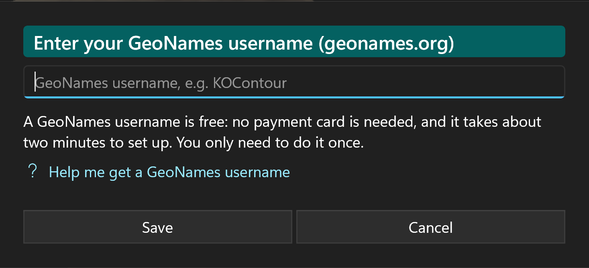
You can register for various free map services with DEM servers, or GeoNames which, for individual, low-use, are likely more than adequate in the speed and number of daily transactions.
Once you have your account and username or key, click on the padlock button, and paste the appropriate one into the
popup dialog.
Click Save to save it in KOContour’s own settings on this PC. You are now ready to download data
from the map service
or elevation data for individual places from GeoNames.
Not sure how to get a username or key? The Help me get… link under the box opens this page at the
steps for that service, and leaves the box open so you can paste in what you get.
Which dataset? KOContour picks the best one for the country you have chosen, so you can usually leave it as
it is. With Open Topo Data that is eudem25m across Europe, including the UK, ned10m
in the USA, nzdem8m in New Zealand and mapzen everywhere else — and where one of the
first three has no data, such as over the sea, KOContour fills the gap from mapzen, so a coastal map
comes out complete. With OpenTopography it is USGS10m in the USA and COP30
everywhere else. For a very large area, use a coarser 90 m dataset (such as COP90 on
OpenTopography) or make the area smaller.
How the main Open Topo Data public datasets compare for resolution/quality:
| Dataset | Res | Coverage | Notes |
|---|---|---|---|
mapzen | ~30 m | Global (incl. high latitudes & bathymetry) | A composite — picks the best source per region (SRTM, ASTER, and national high-res like NED / EU-DEM where available). Best general-purpose default. |
aster30m | 30 m | Global ~83°N–83°S | Real 30 m everywhere, but ASTER GDEM is noisier / more artifact-prone than SRTM. |
srtm30m | 30 m | 60°N–56°S only | Cleaner than ASTER, but no high latitudes. |
ned10m | 10 m | USA only | Higher res — best for US areas. |
eudem25m | 25 m | Europe | Better than 30 m for the UK / Europe. |
nzdem8m | 8 m | New Zealand | Highest res where it applies. |
mapzen (it effectively is ASTER / SRTM plus better data where it exists).ned10m (US), eudem25m (UK / Europe), nzdem8m (NZ).aster30m is a fine fallback for places mapzen / srtm don't cover well (e.g. far north), but I wouldn't pick it as the everyday choice.The main OpenTopography datasets (chosen from the same dataset dropdown) are:
| Dataset | Res | Coverage | Notes |
|---|---|---|---|
COP30 | ~30 m | Global (incl. >60°N) | Copernicus GLO-30. Modern and clean — the best worldwide default. |
COP90 | ~90 m | Global (incl. >60°N) | Copernicus GLO-90. Coarser, but allows a much larger area per call. |
NASADEM | ~30 m | 60°N–56°S | Reprocessed SRTM — cleaner than SRTMGL1, but no high latitudes. |
SRTMGL1 | ~30 m | 60°N–56°S | NASA SRTM, 1 arc-second. |
SRTMGL3 | ~90 m | 60°N–56°S | NASA SRTM, 3 arc-second. Good for large areas. |
AW3D30 | ~30 m | Global ~82°N–82°S | ALOS World 3D (JAXA). |
EU_DTM | 30 m | Europe | Continental Europe DTM. |
USGS10m | ~10 m | USA (+ AK/HI/terr.) | USGS 3DEP, 1/3 arc-second. Best US detail — auto-selected when your country is the US. |
USGS30m | ~30 m | USA (+ AK/HI/terr.) | USGS 3DEP, 1 arc-second. Use for larger US areas. |
USGS1m | 1 m | USA, where lidar exists | USGS 3DEP lidar. Academic API keys only. |
SRTM15Plus | ~450 m | Global | Includes sea-floor bathymetry. |
GEBCOIceTopo | ~500 m | Global | GEBCO, ice-surface; includes bathymetry. |
GEDI_L3 | ~1 km | 52°N–52°S | Very coarse; rarely needed for contour maps. |
COP30 (full coverage including the far north).USGS10m (10 m, auto-selected when your chosen country is the US).COP90 / SRTMGL3) or use a smaller area, to keep the single-call download manageable.
(The dropdown also offers ellipsoidal-height variants SRTMGL1_E / AW3D30_E and a
sub-ice GEBCOSubIceTopo, which are rarely needed for contour maps.)
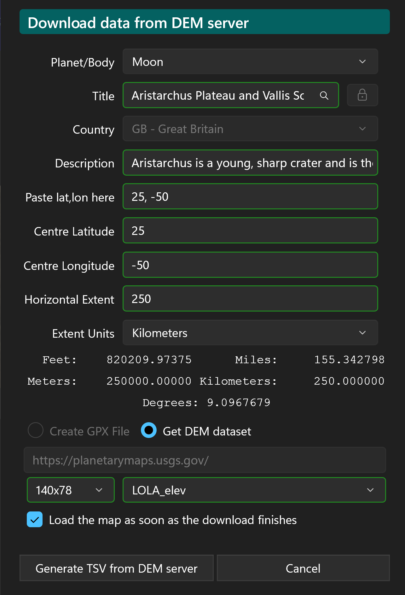
KOContour is not limited to the Earth. The Planet/Body drop-down at the very top of the Download data from DEM server dialog chooses which world the elevation data is for. It starts on Earth, and also offers the Moon, Mercury, Venus, Mars, the asteroid Vesta, the dwarf planets Ceres and Pluto, and Pluto's moon Charon. Choose one of those and the rest of the dialog adjusts itself:
https://planetarymaps.usgs.gov/), which publishes the elevation models of all these worlds. It is
the only source for them, so the server box simply shows it and cannot be changed. It needs no key, so
the padlock button is hidden.| Body | Dataset | Res | Elevations are measured from | Notes |
|---|---|---|---|---|
| Moon | LOLA_elev | ~118 m | A sphere of radius 1737.4 km | Lunar Orbiter Laser Altimeter (Lunar Reconnaissance Orbiter). Whole Moon, roughly −9,100 m to +10,800 m. |
| Mercury | Messenger_elev | ~665 m | A sphere of radius 2439.4 km | Built by the USGS from the MESSENGER spacecraft's images, so a little rougher than laser data. Whole planet, roughly −5,400 m to +4,500 m. |
| Venus | Magellan topography | ~4.6 km | A sphere of radius 6051 km | Magellan radar altimeter. Venus's clouds hide its surface from cameras, so only radar can measure it, and the detail is coarse: best for large areas. Maxwell Montes rises to about 11 km. |
| Mars | MOLA_elev | ~463 m | The areoid, Mars's equivalent of sea level | Mars Orbiter Laser Altimeter (Mars Global Surveyor). Whole planet, roughly −8,200 m to +21,200 m. |
| Vesta | Dawn stereo model | ~92 m | A sphere of radius 255 km | From the Dawn spacecraft's images. Vesta is far from round (about 286 × 279 × 223 km), so its heights include its overall shape and run to tens of kilometres either side of zero. About 95% of Vesta is covered. |
| Ceres | Dawn stereo model | ~137 m | A sphere of radius 470 km | From the Dawn spacecraft's images. Ceres is flattened (wider at the equator), so its heights include that shape too. |
| Pluto | New Horizons stereo model | 300 m | A sphere of radius 1188.3 km | New Horizons flew past once, so only the hemisphere it saw in detail has data, centred near 180°E and including the Sputnik Planitia ice plain. |
| Charon | New Horizons stereo model | 300 m | A sphere of radius 606 km | As for Pluto, only one hemisphere has data, centred near 0°E. |
You describe the area exactly as you do for the Earth: a centre latitude and longitude, and a horizontal extent in whichever units you like. A few things are worth knowing:
-133.8.Behind the scenes the elevations arrive in two different ways, and KOContour handles both for you. For the Moon, Mercury and Mars, the USGS map service cuts out just your area and sends it in one go (it wants the area in degrees for the Moon and in metres on the body's own map grid for Mercury and Mars; KOContour converts for you). The other worlds' elevation models are single whole-world files of between 64 MB and 591 MB, so KOContour reads only the parts of the file your area needs — typically from a few hundred kilobytes to a few megabytes, depending on the size of the area and the number of grid points. The progress popup shows how much is being downloaded, and you are asked first if it would be more than 100 MB.
Click the Create data button and set Planet/Body to Moon. Type Copernicus crater as
the title and a description of your choice, paste 9.62, -20.08 into Paste lat,lon here, and set
the horizontal extent to 8 with the units set to Degrees (about 240 km). Pick a grid
resolution — 280×156 is a good start — click Generate TSV from DEM server, and save the file
as Moon_Copernicus.tsv. When the download finishes, load the file: the crater, some
96 km across with its central peaks, fills the map. Try the 3D relief view on it.
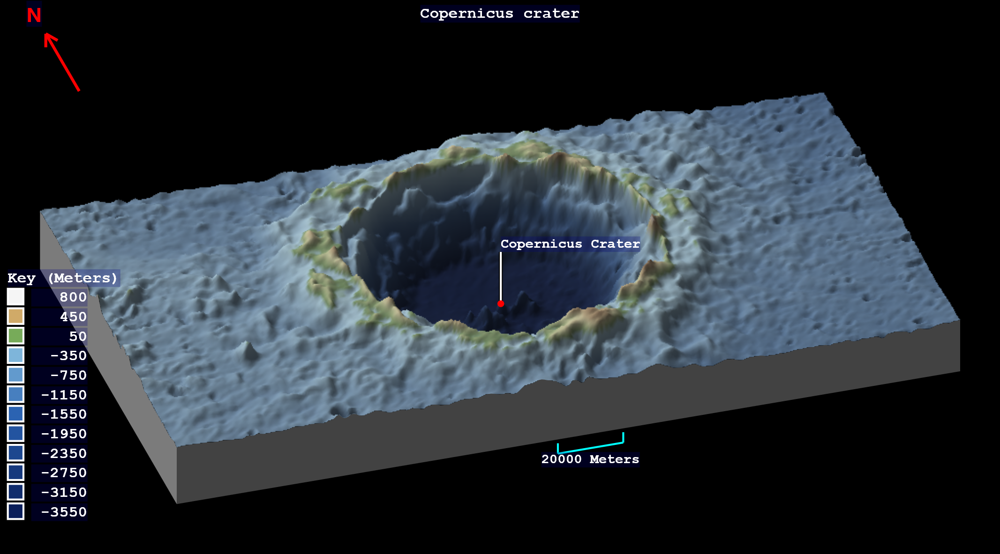
The Copernicus crater in the 3D relief view. The Terrain + water colour scheme is used here, so the blues are not water: they mark ground below the Moon's reference sphere — the crater floor lies some 3.5 km below it (see the height key below).
Enter these the same way: the centre in Paste lat,lon here, and the extent in Degrees.
| Body | Feature | Centre | Extent | What you will see |
|---|---|---|---|---|
| Mercury | Rachmaninoff basin | 27.6, 57.4 | 14 | A double-ringed crater about 300 km across whose floor holds Mercury's lowest point, some 5.4 km below the reference sphere. |
| Venus | Maxwell Montes | 65.2, 3.3 | 16 | Venus's highest mountains, rising about 11 km from the plains around them. |
| Mars | Olympus Mons | 18.65, -133.8 | 20 | The largest volcano in the solar system, some 21 km above the areoid, with its summit caldera. |
| Vesta | Rheasilvia basin | -71.95, 86.3 | 60 | The middle of the giant impact basin, 450 km across, that covers much of Vesta's southern hemisphere: its broad central mound stands well over 10 km above the surrounding basin floor. Expect large negative heights: the basin lies far inside the 255 km reference sphere. |
| Ceres | Ahuna Mons | -10.48, -43.8 | 4 | A lone mountain about 4 km high, thought to be an ice volcano. |
| Pluto | Sputnik Planitia | 20, 175 | 30 | Part of Pluto's great nitrogen-ice plain and its surroundings: heights from about 2 km below the reference sphere to about 3 km above it. |
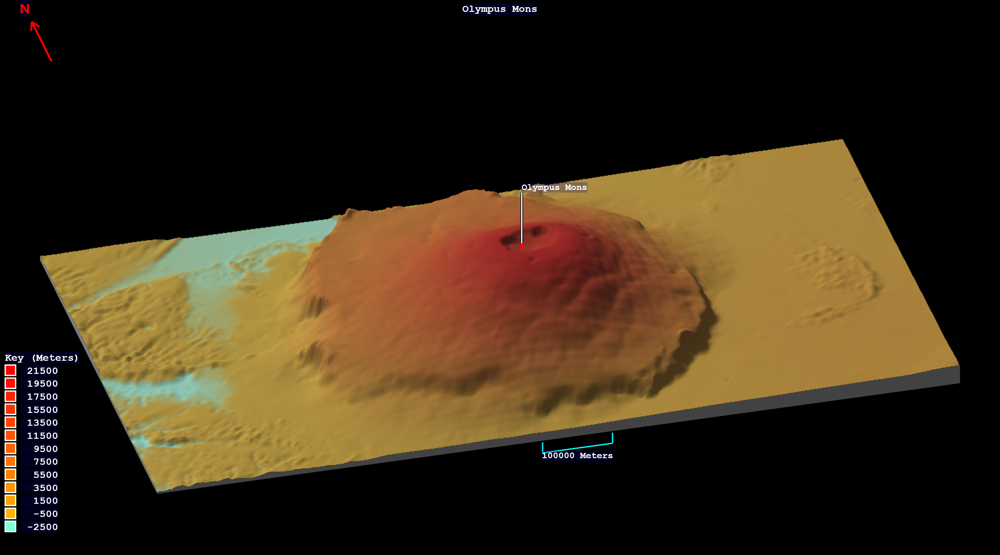
Olympus Mons on Mars in the 3D relief view, from the example in the table above. The volcano rises from the plains to over 21 km above the areoid, with its summit caldera marked by a saved place; the scale bar is 100 km.
A data file remembers which body it is of (see the body column in the file format notes in the
Overview), so once a file of another world is loaded everything is worked out for that body:
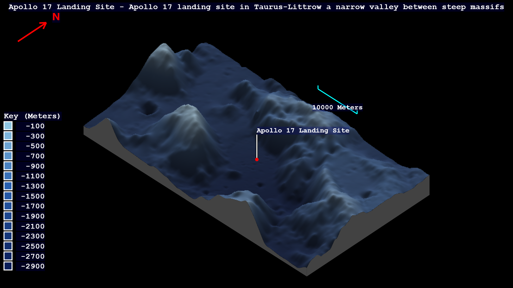
The Apollo 17 landing site in the Taurus-Littrow valley, downloaded with the settings shown in the dialog at the top of this section (2° across, 700×394 grid), in the 3D relief view. Every height in the key is negative: the whole area lies below the Moon's 1737.4 km reference sphere, and the landing site on the valley floor is about 2,630 m below it. The blues mean “below the reference surface”, not water. The massifs that hem in the valley rise around it; the scale bar is 10 km.
KOContour draws its contours from a regular rectangular grid of elevation readings: the contouring algorithm needs evenly-spaced points laid out in rows and columns, not a scattering of random measurements. The Create data dialog (the same button described above) builds exactly such a grid for the area you specify — a centre latitude/longitude and a horizontal extent — and, with the DEM service option, looks up the elevation of every grid point for you and saves a ready-to-load .tsv file in one step. No external website is involved.
(The dialog also has a Create GPX file option that writes just the grid of latitude/longitude points with no elevations, in case you want to fill them in with a separate elevation tool of your own. Most people will simply use the DEM-server route above, which does the elevation lookup directly.)
Alternatively, here is a folder of ready-made data files to download — tab-separated files ready to load, including Maui and examples from the Moon, Mars and Pluto. As always, do a virus scan just as you would for any file you download.
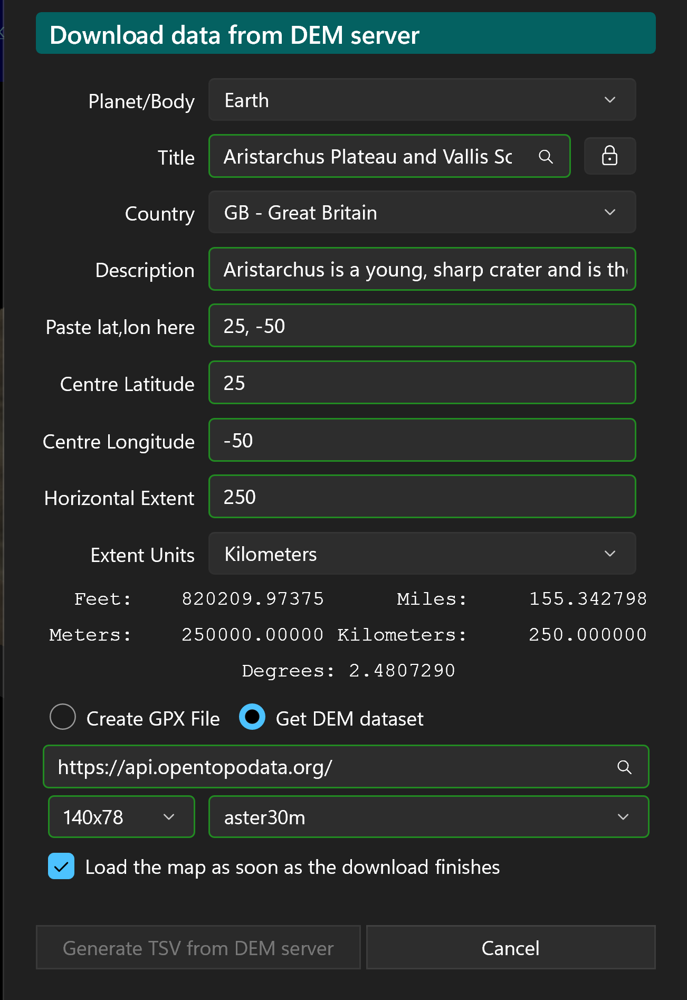
Find the centre of your area in your favourite map source, e.g. Google Maps: search for Maui, right-click the chosen spot, and left-click the
coordinates that pop up to copy them to the clipboard — something like
20.800841, -156.327220. Then click the Create data button to open the dialog.
Click the field labelled Paste lat,lon here and paste the coordinates; the Latitude and Longitude fields fill in and stay in sync (you can also type them individually). As a quick alternative, type a place name into the Title field and choose an entry from the drop-down of suggestions that appears — selecting one fills in the coordinates for you; use the country selector beside the Title to restrict the search to a particular country. Fill in the other fields until they all show a green border, indicating they are valid.
Select the DEM service option and choose a server — Open Topo Data (no key needed) or OpenTopography (once you have pasted in its key). Pick a dataset and a grid resolution, then click Generate TSV from DEM server and save the file as Maui.tsv in your data folder. A progress popup shows while the elevations are fetched; when it finishes, your new map is loaded and drawn straight away (or, if you have unticked Load the map as soon as the download finishes, close the popup and use Load Data).
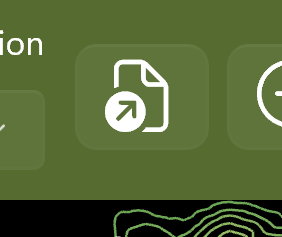
Click the highlighted button, which will show a standard file picker letting you select one of the input files you created above. A contour map will be generated from the data and should look similar to the picture below.
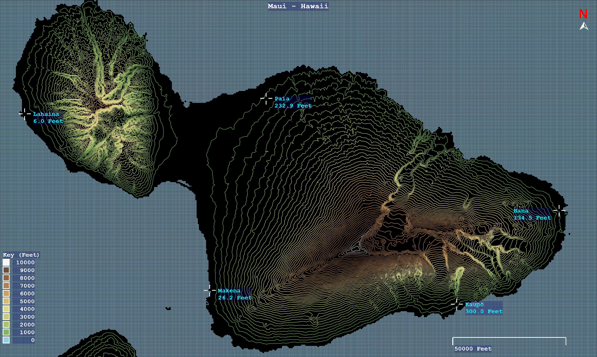
Contour map of Maui generated from the downloaded elevation data
When you load a data file it is added to the Show Favourites list dialog, and you can double-click on entries there to load the data again. Entries are sorted with the most recently loaded at the top. Superimposed on the map you can see the zoom and pan controls, along with the height scale on the left and the distance scale in the lower right.
To zoom into a particular area, click and drag a rectangle across the map. A white selection box — matching the proportions of the map window — follows the pointer as you drag, and releasing the mouse button zooms to the selected area. Press Esc while dragging to cancel without zooming. The zoom and pan buttons in the lower-right corner give step-by-step control.
On a touchscreen you can also use two-finger gestures on the map: pinch two fingers together or spread them apart to zoom out or in — the zoom is centred on the point midway between your fingers — and drag with two fingers to pan the map, which follows your fingers and stops at the edges of the loaded data so you cannot scroll off into empty space. Pinching and panning can be done together in one gesture. A mouse wheel (or precision-touchpad pinch) also zooms.
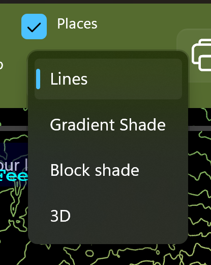
The drop-down near the top of the window selects how the loaded data is drawn. There are four modes:
The colours used by every mode are set by the colour scheme, and the number of bands by the contour-levels slider, both described below.
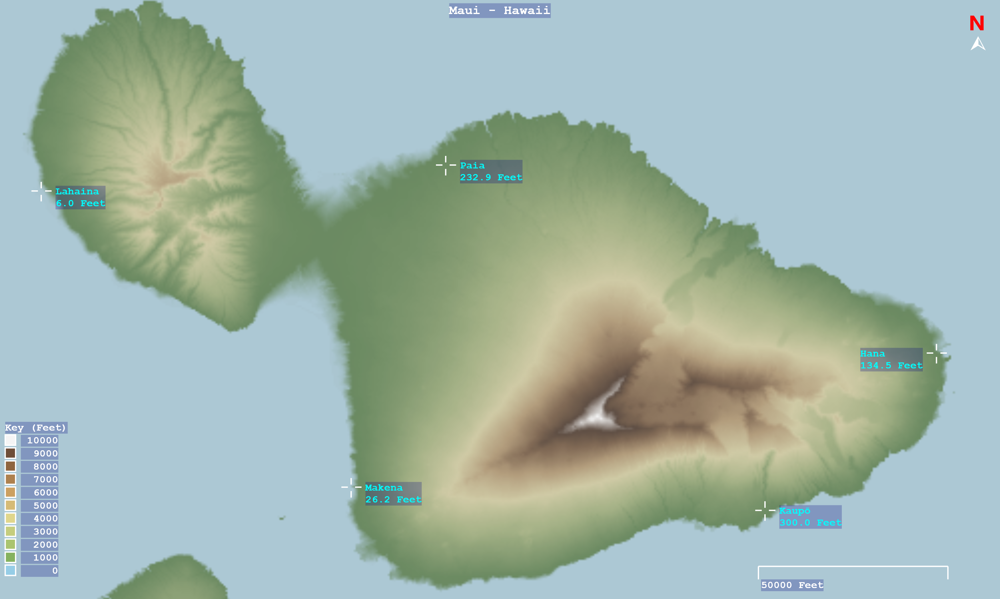
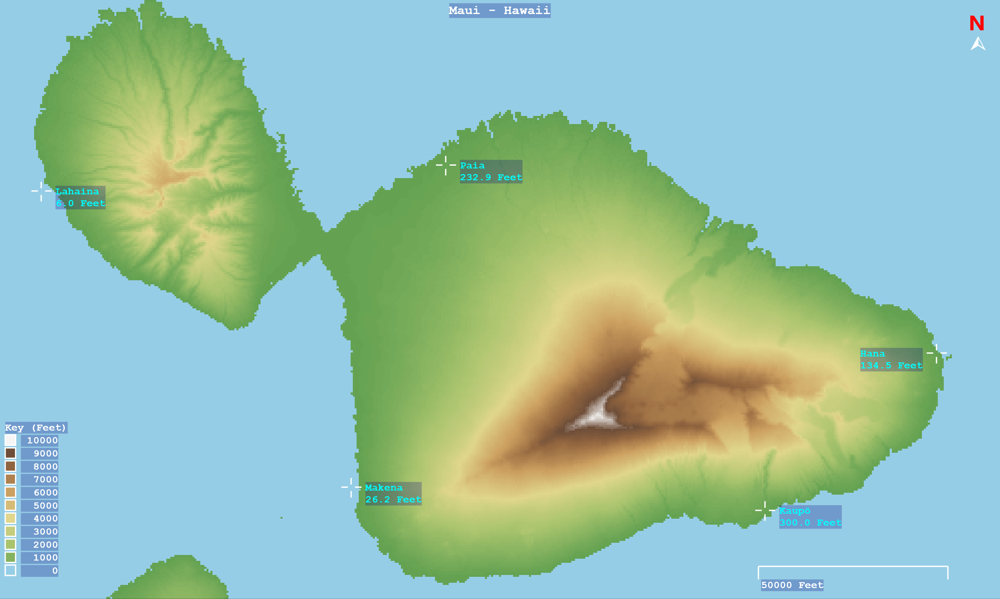
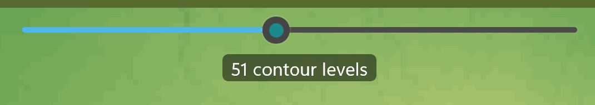
The slider near the top of the window sets how many contour levels are drawn; the "N contour levels" label beneath it shows the current count. The levels snap to "nice" round step sizes (for example 5, 10, 50, 100 …) so the colour key stays easy to read. With the slider focused, the left and right arrow keys step down or up to the next preferred set of levels.
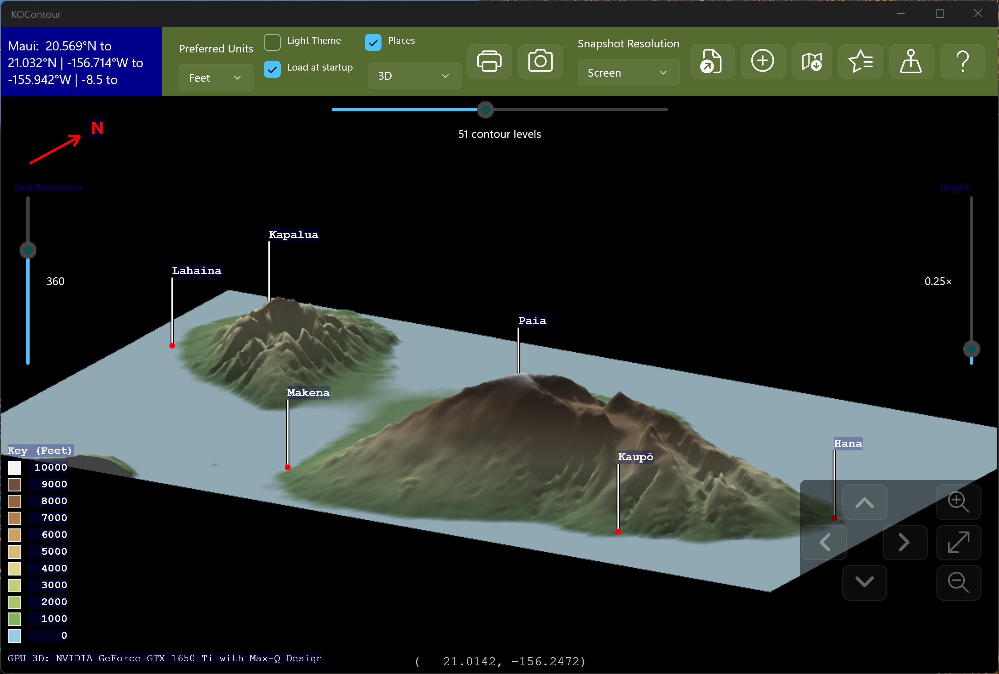
Choosing 3D in the display-mode drop-down draws the data as a shaded relief surface, lit from the north-west. Any places you have added appear as little flagpoles whose flags carry the place names, and the red N compass arrow points to the projected north.
Rotate the view by dragging on it with the mouse (or one finger): dragging left/right spins the view (its compass bearing) while dragging up/down tilts it between almost straight-down and nearly edge-on.
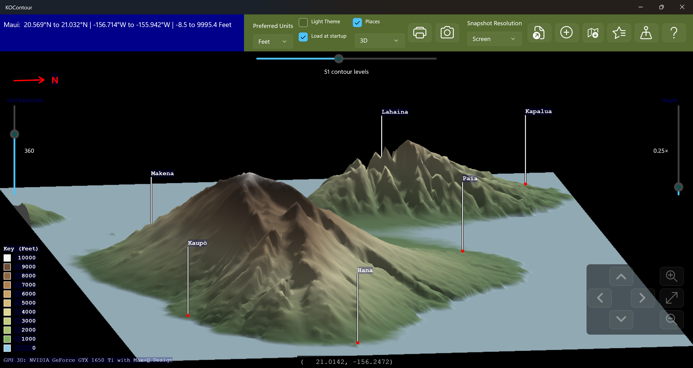
Two vertical sliders sit beside the view:
Zoom the 3D view by pinching with two fingers, or with the mouse wheel / trackpad. The terrain and its labels zoom together.
For smooth rotation the 3D surface is drawn on your graphics card (GPU) where a suitable one is
available, falling back to the processor otherwise. A small marker in the lower-left corner of the map shows
which is in use (for example GPU 3D: …, or CPU only).
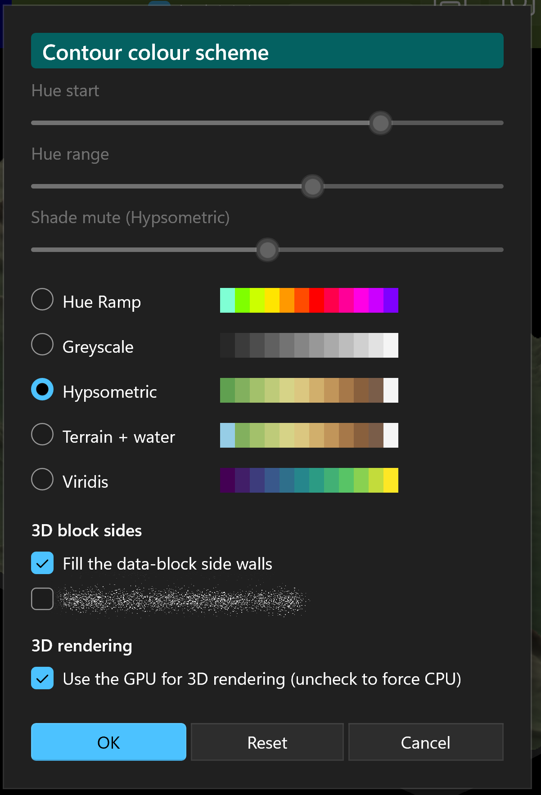
Tap (or click) the contour-levels key in the lower-left of the map to open the Contour colour scheme chooser. Each option shows a preview strip of the colours your current contour heights would have under that scheme. The schemes are:
At the top of the chooser are sliders that fine-tune the scheme they belong to — each one is enabled only while its scheme is selected:
The map updates live as you change the scheme, the sliders, or the switches below, so you can see the effect straight away. Reset puts the selected scheme's sliders back to their standard settings (for the Hue Ramp, the automatic colours chosen to suit your data), Cancel puts everything back to how it was when you opened the chooser, and OK keeps your changes. The chosen scheme applies to every display mode, including the 3D view, and is remembered between sessions.
The chooser also has a 3D block sides section with two switches for the 3D relief view:
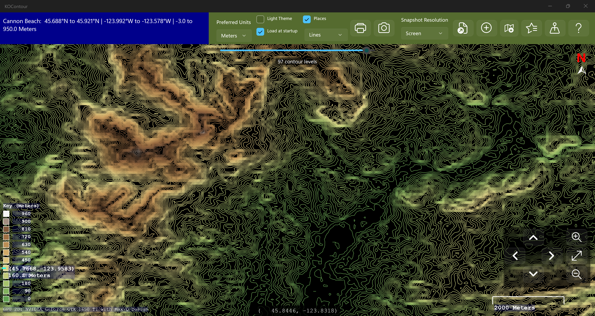
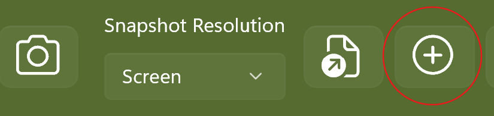
Click the highlighted button to show the Add or Edit a Place dialog. This lets you enter a place name, description, coordinates, and elevation for a new place, and add it to the list in the Show Places list dialog. If you double-click on a place in that list it will also invoke the Add or Edit a Place dialog. If the place does not have elevation data (shown as empty or −1000000) and it is within the currently loaded map data, the elevation field will be highlighted in purple with a suggested value filled in. Click Update Place / Add Place to save, or Cancel to exit without changes.
The Place Name field is also a search box: start typing and a drop-down list of matching places appears. Use the country selector beside it to narrow the search to a particular country. Choosing a place fills in its coordinates, sets the description to Place, County, Country, and fills in the elevation automatically. Place search is powered by GeoNames.
You can also right-click (or press and hold) anywhere on the map to see a list of the nearest places. Choosing one opens the Add or Edit a Place dialog ready-filled with that place's name, description and coordinates, together with its elevation where available. The most recently chosen place is remembered, so clicking the Add or Edit a Place button afterwards re-opens the dialog pre-filled with it.
Every place records which world it is on. The Planet/Body drop-down at the top of the Add or Edit a Place dialog shows it: for a new place it starts on the body of the map you have loaded, and for an existing place it shows that place's own body. A place only ever appears on maps of its own body, so a town on the Earth and a crater on the Moon can share a latitude and longitude without turning up on each other's maps.
GeoNames is a gazetteer of the Earth, so on another world the place-name search looks through KOContour's own built-in places for that world instead. With Planet/Body set to Mars, typing mar offers Valles Marineris; choosing it fills in the name, description and coordinates. A place you already have is marked (already in your places), so you don't add it twice. The Country selector is switched off for other worlds.
For anywhere not in the built-in list, type the name and description and paste in the coordinates yourself.
The Apollo 11 landing site, for instance, is at 0.67416, 23.47314 on the Moon. As with any
place, you can leave the elevation blank and have one suggested from the loaded map when you next open the
place for editing.
On a map of another world, right-clicking offers Add a place here on Mars… (naming whichever world it is), which opens the dialog with the coordinates of the point you clicked and its elevation already filled in. Below it, nearest first, come your own places on the map (marked ★, to edit them) and up to ten of the built-in places for that world that are on screen and not yet among yours: choosing one of those opens the dialog with its name, description, coordinates and elevation filled in, ready to add. Longitudes are from −180 to 180 with east positive, as described in Maps of Other Worlds.
Apollo 18 never flew: it was cancelled, with Apollo 19, in September 1970. Its target changed during planning — Schröter's Valley and the crater Gassendi were both considered — but NASA's last plan before the cancellation, in March 1970, sent it to the Copernicus crater. No exact landing point was ever fixed, so this example uses the crater's official centre, which lies among its central peaks.
Apollo 18 (proposed) as the Place Name and something like
Proposed Apollo 18 landing site, Copernicus crater, Moon as the Description.9.62, -20.08 into Paste lat,lon here.As a shortcut, right-click the middle of the crater on the map and choose Add a place here on Moon…: the dialog opens with the coordinates of the point you clicked and its elevation already filled in, so you only need to type the name and description. The place is saved as a place on the Moon, so it never appears on a map of the Earth, even one that covers the same latitude and longitude.
Places you saved with earlier versions of KOContour did not record a body; they are all treated as places on the Earth, which is what they were. The same goes for places files exported from earlier versions when you import them.
As an example, let's add Lahaina.
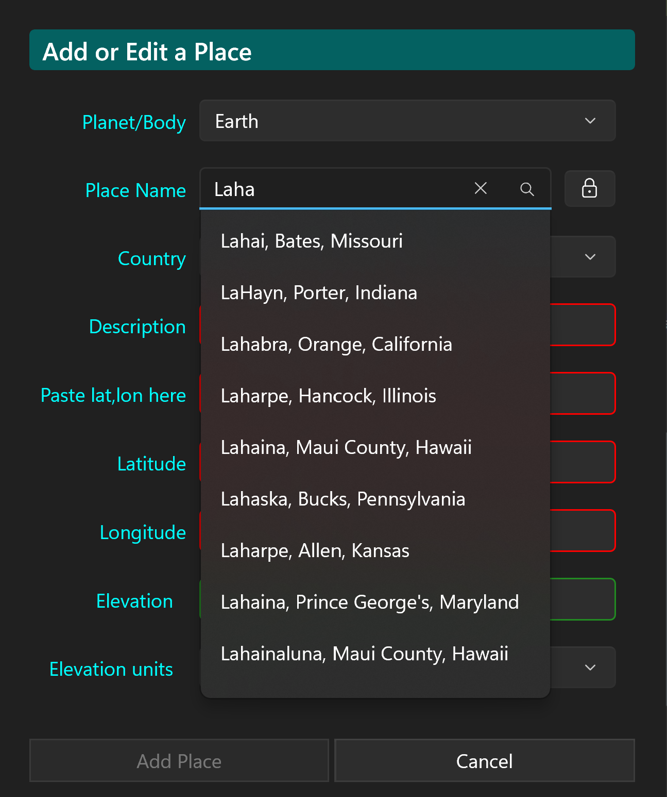
If you have not yet set up a free GeoNames account (and I would strongly recommend that you do) you can use Google Maps as described above to get the coordinates for Lahaina and paste them into the dialog, then add the other details If you have set up your GeoNames account, and entered the username then you can type the first few letters of the place name and a list of suggestions will pop up. Click on the one you you want, and it will populate all the fields in the dialog for you. This is the easiest way of getting the data.
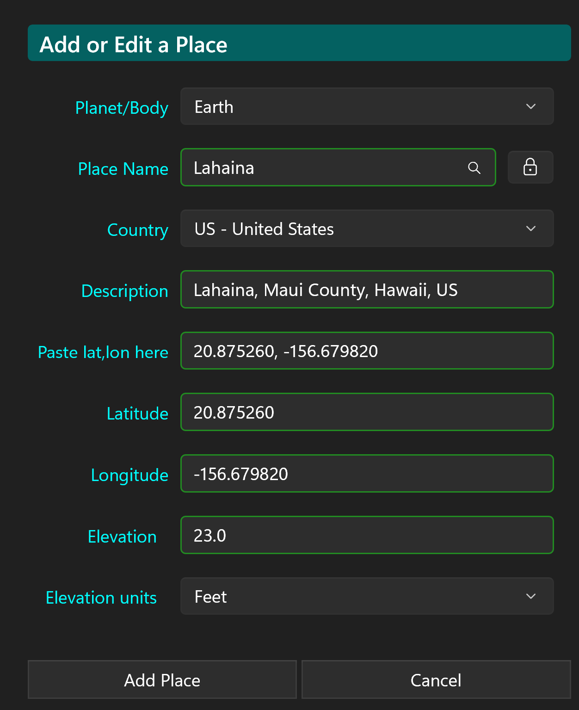
With the coordinates filled in, give the location a name and a short description, and add an elevation if you know it — or leave the elevation blank and let KOContour suggest one from the loaded map data. As a shortcut you can type the place name straight into the Place Name search box and pick it from the drop-down list, which fills in the coordinates (and elevation) for you. When every field shows a valid (green) value, click Add Place to save it.
Lahaina will appear on the map and be highlighted as shown.
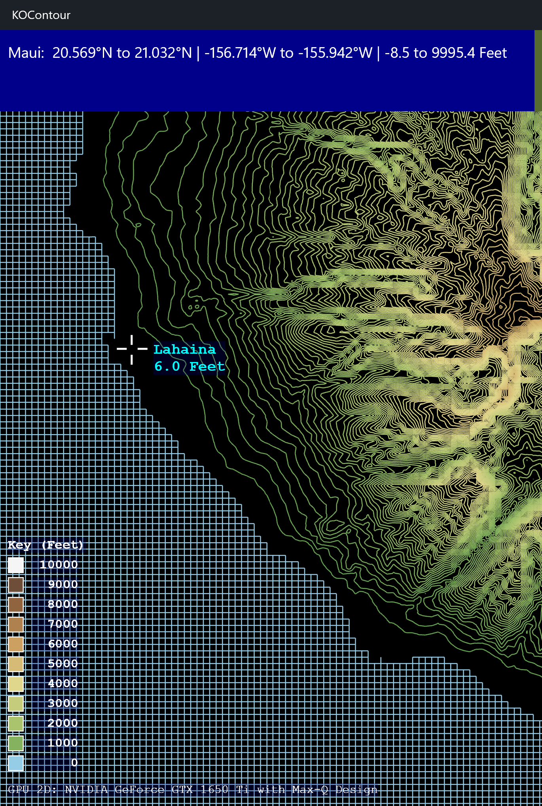
Try adding another place such as Paia. Leave the elevation unset and save the new place, then continue to the next section.
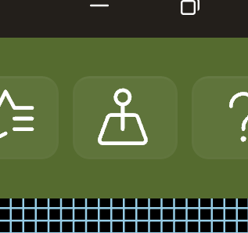
Click the highlighted button to show the Show Places list dialog. Places are maintained in alphabetical order. Double-clicking an entry launches the Add or Edit a Place dialog. If a place does not have elevation data and it is within the currently loaded map data, the elevation field will be highlighted in purple with a suggested value.
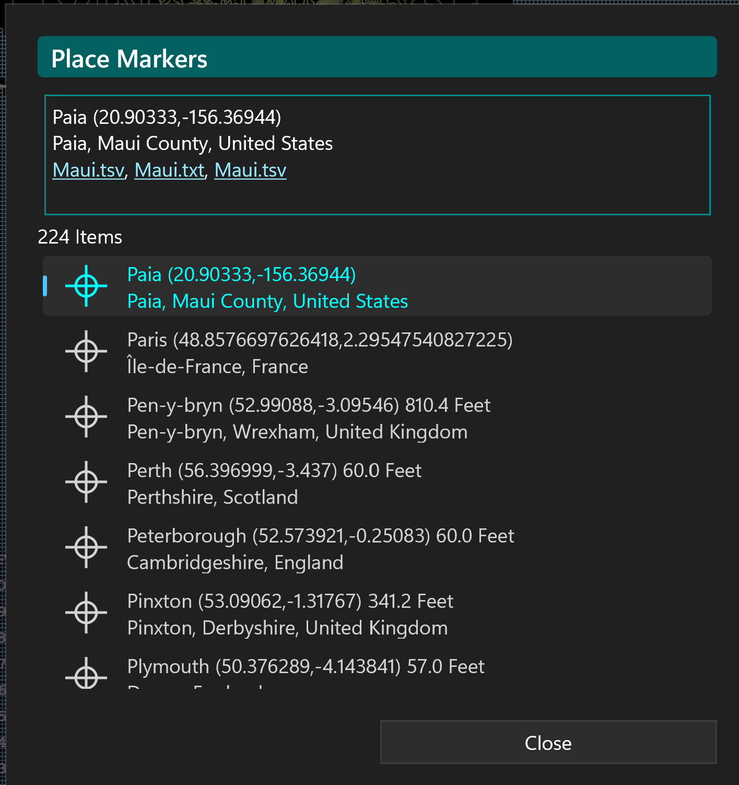
Try looking for Paia — you can jump to the P section by pressing the P key. Double-click on Paia; if the elevation was left as the default (−1000000 means undefined), it will suggest an elevation read from the map’s height data at that point and highlight it as shown. Places visible on the currently loaded map are shown in cyan, otherwise they are shown in light gray. The list holds your places on every world together; a place counts as on the map only if the map is of the same body, and the tooltip of a place on another world says which it is on. If you re-type in the place name it will suggest a more accurate elevation from GeoNames - 232.9 feet - if you have set up your account on that as described below.
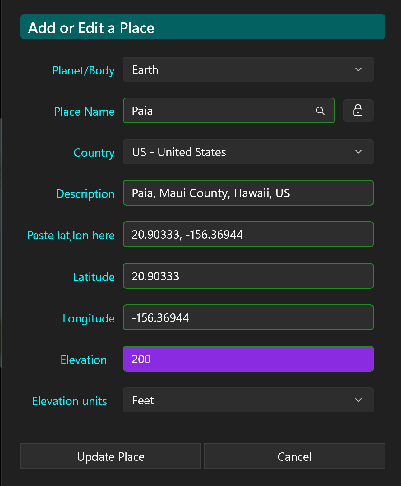
Getting a GeoNames username. KOContour looks up place names — the places near where you right-click the map, and the suggestions as you type a place name — using GeoNames, a free online directory of places. GeoNames asks each person using it to have their own username. It is completely free, needs no payment card, takes about two minutes, and you only ever do it once:
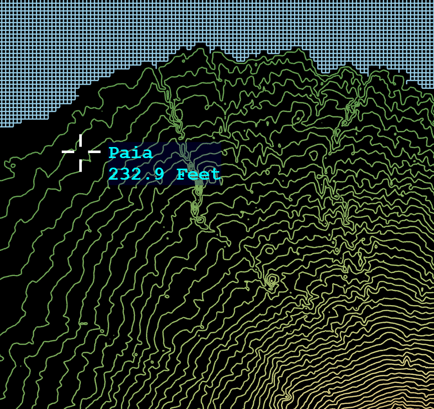
You can check your GeoNames account directly by typing the following into the address bar of your web browser:
http://api.geonames.org/searchJSON?name_startsWith=<placename>&featureClass=P&maxRows=10&username=<username>
Replace <placename> with the start of a place name and <username> with
your GeoNames username. If your account is working, this returns a list of matching places and the details of
each. If it says the account is “not enabled to use the free webservice”, do step 3 above.
Click Update Place to save the place data and elevation, which will then appear on the map under the place name.
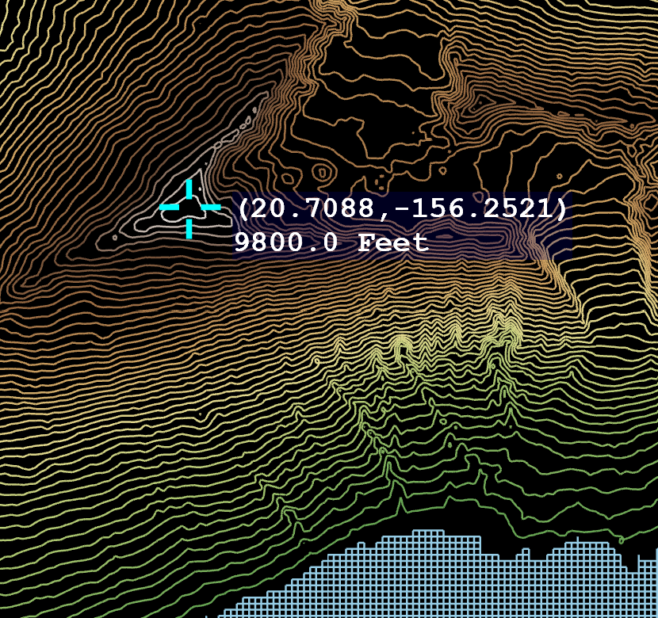
To find the elevation of a point, click on the map at the desired location. A marker will appear showing the elevation along with the latitude and longitude. To remove it, click again in the centre of the crosshair.
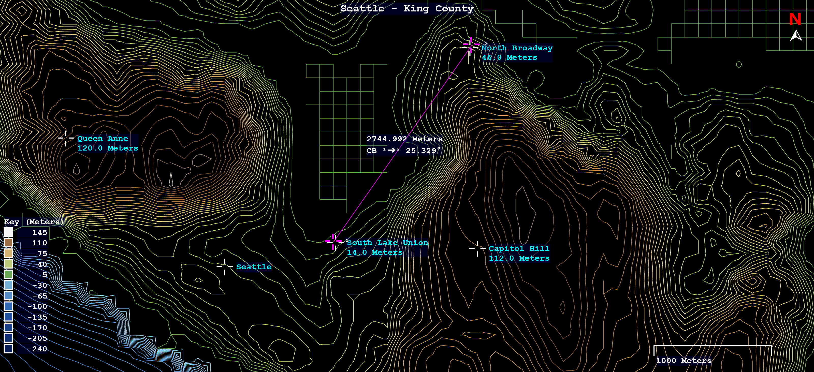
To find the distance between two points, hold the Ctrl key and click on the map at the first location. A marker will appear. Keep holding Ctrl and click the second point. A line will be drawn between the points showing the distance and compass bearing. To remove the measurement tool, click again in the centre of either crosshair.
Distances are worked out over the surface of the world the map is of, so on a map of another world they use that body's size, not the Earth's. One degree of latitude is about 111 km on the Earth, 59 km on Mars, 43 km on Mercury and 30 km on the Moon.
Click the highlighted button to show the Show Favourites list dialog. The list is maintained in last-access order, most recent first. Double-click an entry to load that data file. If the file no longer exists you will be asked if you would like to remove it from the list.
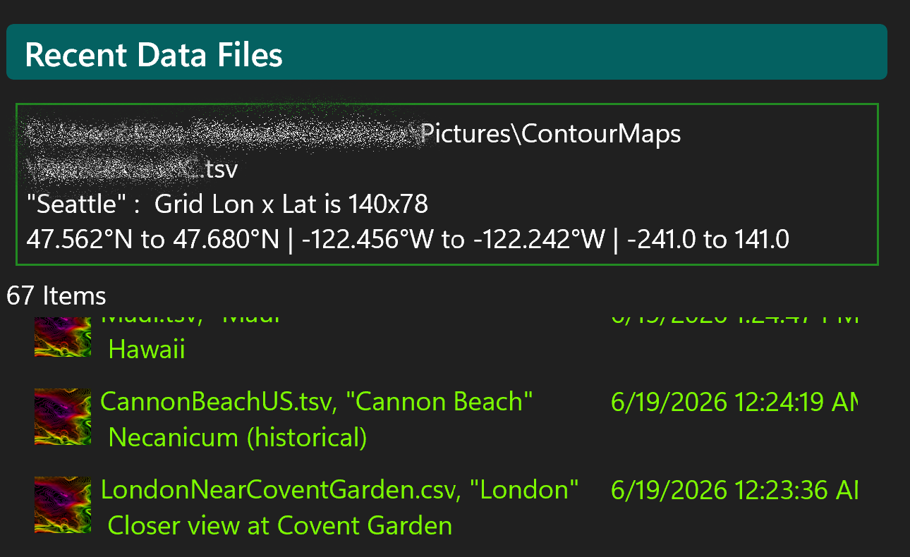
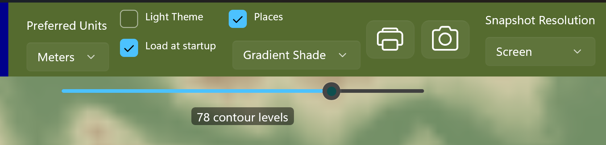
The Light Theme checkbox switches to a light background, which is sometimes better for printing. The Load at startup checkbox causes the app to automatically load the last successfully loaded data file at launch, if it still exists. Both of these settings are persisted across launches. The Show places option is not persisted.
Everything else is easy to figure out from the tooltips and prompts — have fun exploring!
Draw the data as contour lines, a smooth gradient shade, solid block shading, or a 3D relief surface.
GPU-accelerated 3D terrain you can rotate by dragging, with sliders for vertical exaggeration and mesh granularity, and pinch / mouse-wheel zoom.
Tap the contour key to choose a colour scheme: the original, greyscale, hypsometric terrain tints, terrain-with-water, or perceptually-uniform Viridis.
A slider sets the number of contour levels, snapping to round step sizes; arrow keys step through the preferred level sets.
Choose the Moon, Mercury, Venus, Mars, Vesta, Ceres, Pluto or Charon in the download dialog to map craters, volcanoes and ice plains from NASA spacecraft data, with distances worked out for that world and your own places on it. No key needed.
Fetch elevation data directly from Open Topo Data or OpenTopography servers, with automatic rate‑limit handling and progress reporting — or from USGS Astrogeology for the Moon and seven other worlds.
Create a ready-to-use elevation TSV grid for any region from a lat/lon centre point, with the elevations filled in directly from the chosen DEM server.
Load TSV elevation files and generate detailed contour maps with zoom, pan, height scale, and distance scale overlays.
Add, edit, and store named places with coordinates and elevation, including automatic elevation suggestions from map data.
Click anywhere on the map to display the elevation and coordinates of that point.
Hold Ctrl and click two points to measure distance and compass bearing between them.
Automatically tracks recently loaded data files for quick reloading, with missing‑file cleanup.
Includes light theme mode, load‑at‑startup, and show‑places toggles, with persistent settings.
Type a place name in the Create-GPX or Add-Place dialogs and pick from a drop-down of suggestions, optionally filtered by country, to fill in coordinates and elevation. Powered by GeoNames.
Right-click anywhere on the map to list the nearest places and add any of them to your places with a single click.
Click and drag a proportional selection box across the map to zoom into an area; press Esc to cancel.
You can import and export your saved places from the Places List dialog. It will warn if there are duplicates. Each place carries the world it is on; files from earlier versions import as places on the Earth.
The app can be installed from:
Requires Windows 10 (build 1809) or later, or Windows 11.
KOContour is free software.
← Back to KLO Software